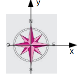
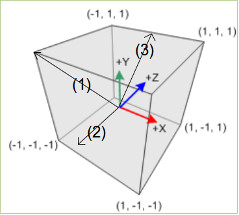
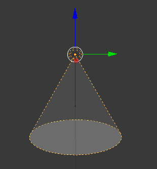

Babylon.js propose 4 types d'éclairages :
La lumière directionnelle vous permet de simuler une source située à "l'infini", les rayons sont donc parallèles entre eux (un peu comme les rayons du soleil) :
BABYLON.DirectionalLight(nom, direction+sens, scene);
la "direction+sens" est un "Vector3", étrange non ?
Au début de ce document, nous avons vu que "Vector3" représente un point dans l'espace 3D. Mais, ce que j'ai omis de vous dire, c'est que "Vector3" peut aussi être une direction et un sens dans ce même espace 3D. Je m'explique :
Pour définir une direction et un sens, un point ne suffit pas (ce n'est pas à vous que je vais apprendre que "par un point il passe une infinité de droite", donc impossible de donner une direction avec un seul point). Comment faire alors ?
Afin de simplifier les choses, raisonnons en 2D (le principe est le même en 3D).
Pour définir une direction, il faut 2 points, mais partons du principe qu'un de ces 2 points soit l'origine du repère (0,0). Avec un seul point, nous pouvons alors définir une direction et un sens :
Imaginons un point de coordonnée (0,1), nous aurons alors une direction "Sud-Nord" et le sens "vers le nord".
Un point de coordonnée (0, -1) indiquera la même direction "Sud-Nord" mais pas le même sens, ici on ira "vers le sud".
Quels sont la direction et le sens donnés par un point de coordonnées (1,0) ? Réponse : direction : "Ouest-Est" sens : "vers l'est"
Un peu plus difficile : Quels sont la direction et le sens donnés par un point de coordonnées (1,1) ? Réponse : direction : "SudOuest-NordEst" sens : "vers le NordEst"
Quels sont la direction et le sens donnés par le point de coordonnées (1,-1) ? Réponse : direction : "NordOuest-SudEst" sens : "vers le SudEst"
En 3D le principe est le même : on prend toujours comme point de départ l'origine du repère (0,0,0).
On définira une direction et un sens par une flèche :
Avec quel "Vector3" représenter la direction et le sens de la flèche (1) ? Réponse : (0,1,1)
Avec quel "Vector3" représenter la direction et le sens de la flèche (2) ? Réponse : (0,0,-1)
Avec quel "Vector3" représenter la direction et le sens de la flèche (3) ? Réponse : (0,1,1)
J'ai, à chaque fois, utilisé 0, 1 et -1 au niveau des coordonnées. Il est possible d'utiliser n'importe quelle valeur (à la place de 1 et de -1).Cependant, par souci de clarté, je vous conseille d'utiliser uniquement 0, 1 et -1 dans un "Vector3" quand celui-ci sera destiné à indiquer une direction et un sens.
À chaque fois que vous aurez besoin de définir une direction et un sens, il faudra procéder de cette façon (en vous ramenant à l'origine du repère). Une fois votre "flèche" définie, vous pourrez, mentalement, la déplacer où bon vous semble afin de vérifier si la direction et le sens que vous venez de définir à l'aide d'un "Vector3" est bien celui recherché.
Enfin, pour ceux qui ne l'ont pas encore traité en cours de mathématiques, cette "flèche" est un outil mathématique dénommé vecteur.
Cette mise au point "mathématiques" étant fait, revenons à l'éclairage dans BabylonJS :
Le spot, comme son nom l'indique est un spot :
BABYLON.SpotLight(nom,position,direction+sens,angleOuverture,puissance, scene);
le nom, la position et la "direction+sens" ne devraient pas vous poser de problème l'angle correspond à l'angle d'ouverture du spot (en radian). La puissance vous permet d'indiquer la puissance lumineuse émise par le spot.
ATTENTION, pour des raisons que je n'expliquerai pas ici, plus la valeur est importante moins l'intensité lumineuse sera forte.
Créer un nouvel exemple (app_05)
script.js
var canvas = document.getElementById("renderCanvas");
var engine = new BABYLON.Engine(canvas, true);
var scene = new BABYLON.Scene(engine);
var camera = new BABYLON.ArcRotateCamera("maCamera", 0, Math.PI/4, 30, new BABYLON.Vector3(0, 0, 0), scene);
var lightP = new BABYLON.PointLight("pointLu", new BABYLON.Vector3(15, 20, 15), scene);
var lightD = new BABYLON.DirectionalLight("dirLight",new BABYLON.Vector3(1,-1,0), scene);
var lightS = new BABYLON.SpotLight("spotLight", new BABYLON.Vector3(-1, 5, 0), new BABYLON.Vector3(0,-1,0), Math.PI/2, 3, scene);
var tore = BABYLON.Mesh.CreateTorus("torus", 4, 1, 50, scene, false);
scene.activeCamera.attachControl(canvas);
engine.runRenderLoop(function () {
scene.render();
});
Étudier et tester cet exemple. Commenter et décommenter tour à tour les lignes codant les différents éclairages pour constater les effets de chacun.
La lumière hémisphérique est un peu plus complexe à expliquer, elle est utilisée pour créer une "lumière d'ambiance".
var light = new BABYLON.HemisphericLight("Hemi", new BABYLON.Vector3(0, 1, 0), scene);
"Hemi" correspond au nom
new BABYLON.Vector3(0, 1, 0) correspond à la direction de la lumière
scene : correspond à la scène à éclairer
Modifier l'app_05
script.js
var canvas = document.getElementById("renderCanvas");
var engine = new BABYLON.Engine(canvas, true);
var scene = new BABYLON.Scene(engine);
var camera = new BABYLON.ArcRotateCamera("maCamera", 0, Math.PI/4, 30, new BABYLON.Vector3(0, 0, 0), scene);
var light = new BABYLON.HemisphericLight("Hemi", new BABYLON.Vector3(0, 1, 0), scene);
var tore = BABYLON.Mesh.CreateTorus("torus", 4, 1, 50, scene, false);
scene.activeCamera.attachControl(canvas);
engine.runRenderLoop(function () {
scene.render();
});
Quand vous ne voulez pas d'effet d'éclairage particulier, la lumière hémisphérique est souvent un choix judicieux pour éclairer une scène.